.png)
Bem vindo ao
Kratts
Friends
Este site é uma homenagem aos irmãos Kratt, renomados biólogos e amantes dos animais
Essa é a nossa seção de Cães para adoção
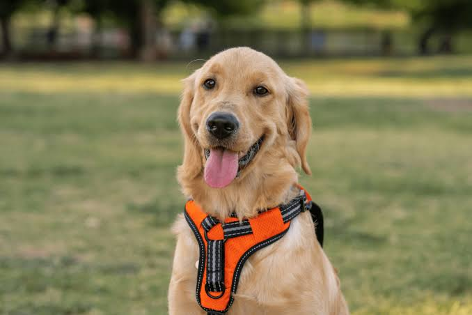
Nome: Rodolfo
Idade: 3 Anos
Muito brincalhão: tem muita disposição, adora correr, brincar e precisa de bastante estímulo físico e mental.
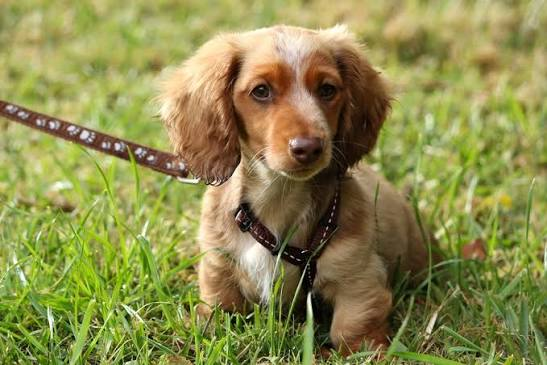
Nome: Ezequiel
Idade: 5 Anos
Carinhoso: busca contato físico constante, adora receber afeto e demonstra afeto de forma intensa.
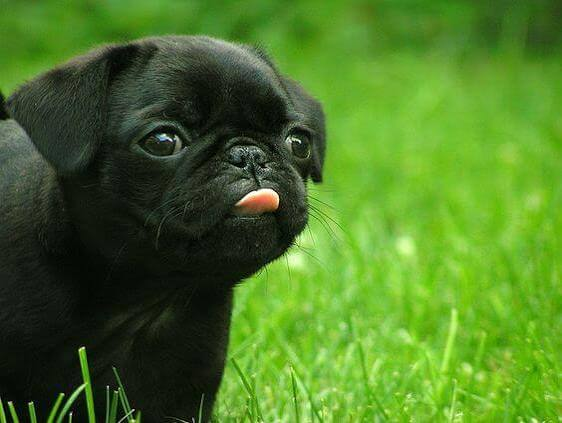
Nome: Raimundo
Idade: 4 Meses
Calmo: temperamento mais sereno, que seadaptam bem a ambientes calmos e rotinas mais pacíficas.
Essa é a nossa seção de Gatos para adoção
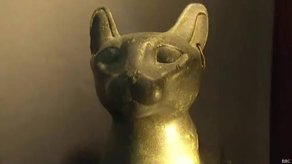
Nome:Tutancamiau
Idade: 4207
Mais na dele, reservado, autoritário. Se acha um deus, porém é bem dócil. OBS: se encostar muito vira pó
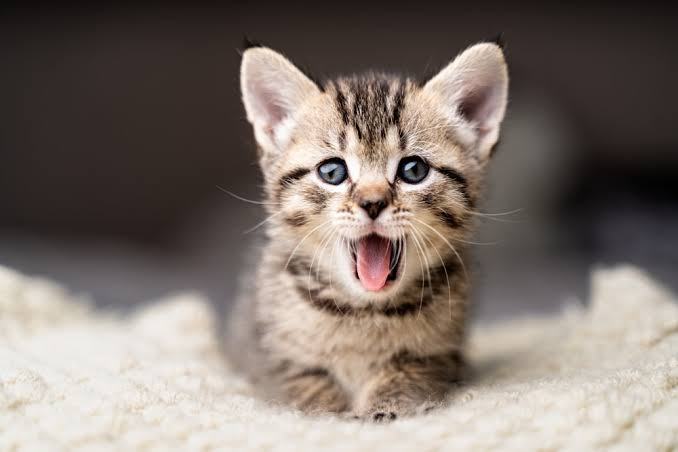
Nome: Adalberto
Idade: 1 ano
altamente curioso, explorador e ativo que gosta de investigar tudo.
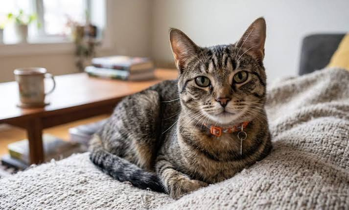
Nome: Gaterson
Idade: 4 anos
Impulsivo: comportamento imprevisível, reações rápidas e picos repentinos de energia.
Essa é a nossa seção de Aves para adoção
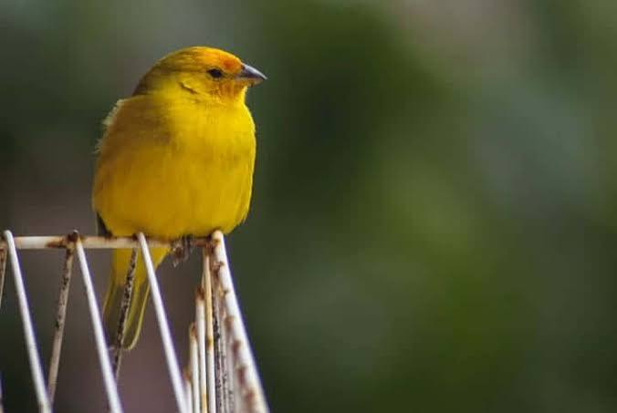
Nome: Chico Rey
Idade: 3 anos
Passa o dia pulando de um poleiro para o outro, bicando objetos e explorando o ambiente.
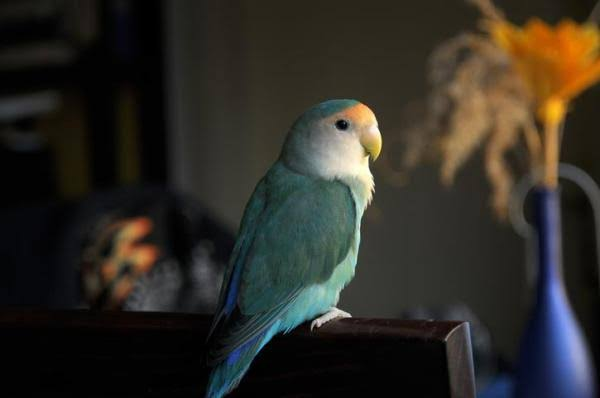
Nome: Juninho
Idade: 2 anos
Enérgico, brincalhão e “falante”. Tem uma personalidade enorme, gosta de estímulos, brinquedos e de criar laços com os donos.
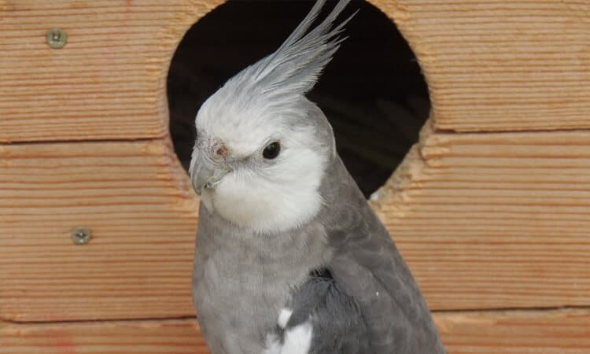
Nome: Neymar
Idade: 3 anos
Carinhosa, sociável, charmosa e muito apegada ao tutor.
Essa é a nossa seção de Hamsters/Coelhos para adoção
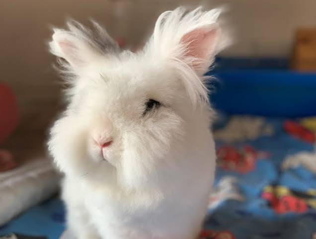
Nome: Elgin
Idade: 5 anos
Gosta de companhia (humana ou de outros coelhos, dependendo da adaptação), mas costuma ser ele a decidir quando quer carinho.
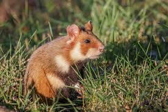
Nome: Coentro
Idade: 3 anos
solitária, territorial, curiosa e de hábitos predominantemente noturnos
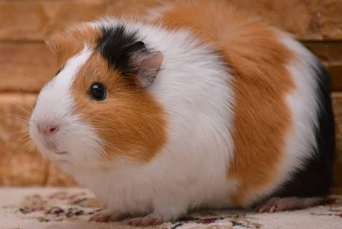
Nome: Ademir
Idade: 4 anos
dócil, sociável, curioso e bastante expressivo, embora possa ser um pouco arisco e medroso no início por instinto de presa.